git内部原理(一)
Git内部原理
Git是一个内容寻址的文件系统（content-addressable system)，分为底层命令与高层命令
底层命令与高层命令
git的底层命令是大多数用户接触不到的命令，一般用于内部或者脚本中，作为Git的使用者只需要掌握高层命令，生成仓库的命名的git init，创建一个test的目录，运行命令git init test，将会在test目录下生成.git目录，.git目录包含了所有的操作的对象，下图是.git目录下包含的结构：
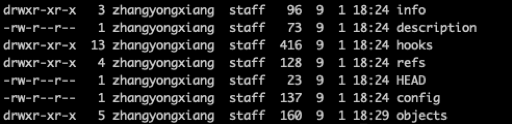
主要的目录的介绍
- info，包含全局排除文件，类似.gitignore，里面可以指定排除文件的文件名的模式；
- description,用于GitWeb程序的描述文件；
- hooks,包含客户端于服务端的脚本；
- refs， 存储分支（tag）指针，用于指向对象；
- HEAD，一个文本，里面写入了当前被检出的分支
- config，项目特有的git配置；
- objects，用于存储所有的数据内容;
- index,存储暂存区信息
Git对象
git如何操作对象
git是一个基于内容寻址的系统的，所以是一个简单的key-value数据库，key是文件内容+头部信息的hash256编码，value是文件内容；可以通过hash-object存储对象（文件），返回hash256编码的键值，1
echo 'test content' | git hash-object -w --stdin
输出的结果是：d670460b4b4aece5915caf5c68d12f560a9fe3e4
查看git如何存储对象；
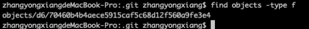
可以通过git cat-file通过键值拿到存储的对象。
树对象
Git以一种文件系统的方式存储数据，分为树对象与数据对象，树对象类似与目录，存储子目录与文件的hash（地址）与文件名字与权限模式，数据对象是普通文件；基本形式：
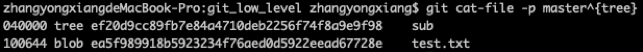
存储的结构图：
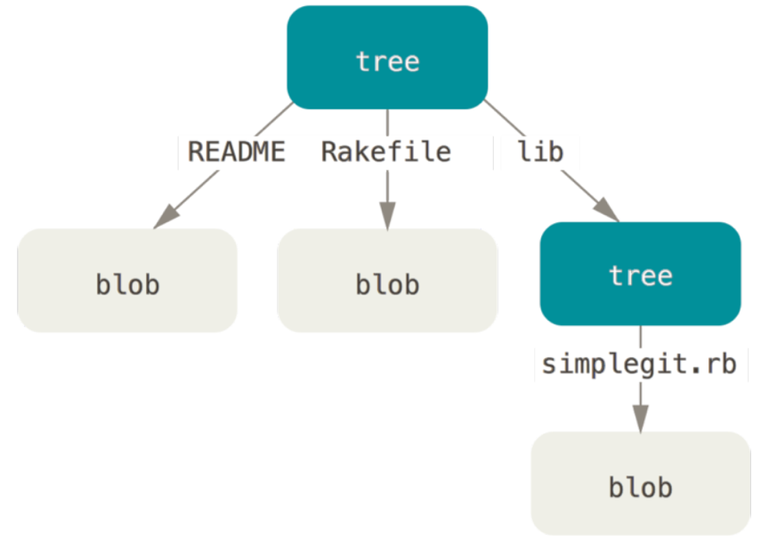
人为的创建暂存区的命令是：
git update-index –add –cacheinfo 1000644 d670460b4b4aece5915caf5c68d12f560a9fe3e4 text.txt
通过git wirte-tree命令将暂存区的内容写入到一个树对象内。
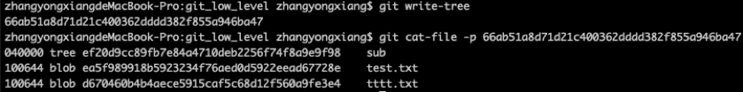
可以将一个树对象加入到一个树对象中，使用git read-tree命令将树对象读入到暂存区使成为某个树对象的子目录使用–prefix=xxx；
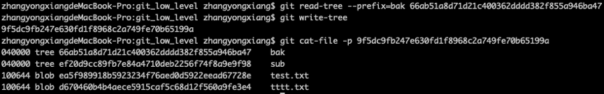
提交对象
提交对象由于保存快照信息，使用commit-tree命令创建，需要指定一个数对象的sha-1值，如果有父提交对象的话，也可以指定，使用命令的方式如下：
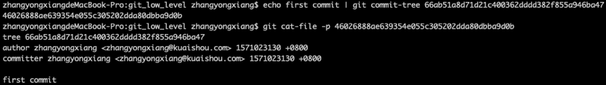
创建子提交对象
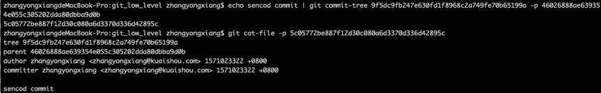
生成的数据对象、树对象与提交对象都保存在.git/refs/objects目录下。关系图：
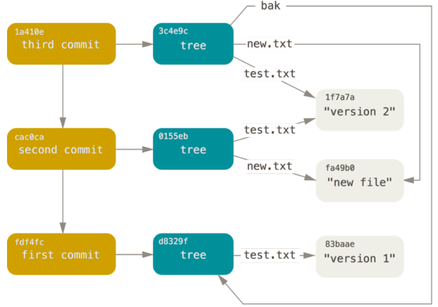
对象存储
Git构造头部信息的方式是： type #{content_length} \0,然后与文件内容进行拼接，计算出sha-1编码，然后文件内容通过zlib压缩后写入到sha-1表示的文件path中。
Git引用
给提交对象创建一个通俗理解的名字，指向提交对象；这种通俗理解的名字被成为引用（refernces/refs），在.git/refs目录下。里面的文件存储的是提交对象的sha-1值；使用git update-ref更新里面的sha值；这就是分支的本质；git的数据库结构如下：
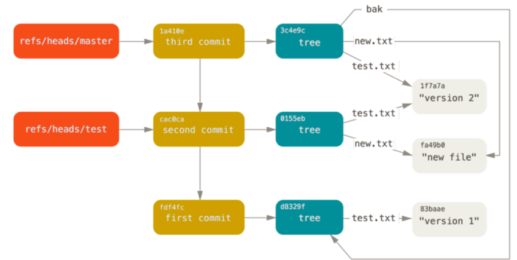
HEAD应用
HEAD是一个符号引用文件（symbolic reference），里面存储了当前所在分支的引用，当commit的时候，使用HEAD指向的引用里面的sha-1作为新commit的父提交对象；可以使用symbolic-ref查看与更新HEAD引用的值。
标签引用
第四种对象，标签对象；类似与提交对象，里面指向的是提交对象；可以创建2种标签：
- 轻量标签：git update-ref refs/tags/v1.0 xxxxxx，只是创建一个引用
附注标签：创建一个标签对象，rags里面的引用指向标签对象；创建附注标签的方法是
1
git tag -a v1.1 5c05772be887f12d30c080a6d3370d336d42895c -m 'dwqdwqdqw’
标签对象的结构：
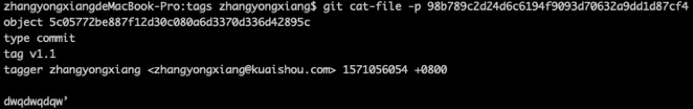
远程引用
远程引用在refs/remotes目录下，记录了远程git仓库各分支里面最新的sha-1值；远程引用是只读的，不能更新。
包文件
git会定期将多个对象打包成一个称为包文件的二进制文件，节省空间提升效率；比如git gc执行的时候就会打包；生成的文件如下图：
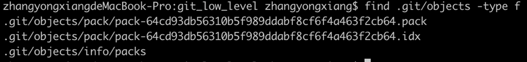
所有的数据保存在.pack文件内，.idx文件内保存了对象之间的偏移信息；通过这种方式减少数据，主要的原理是，只保存文件不同版本之间的差异；通过git verify-pack命令查看打包的内容
引用规格
添加远程版本库后，会生成引用规格：
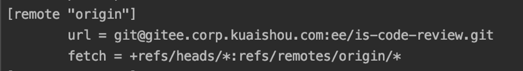
可以看到引用规格的格式是：
+\
src是一个模式是远程版本库的引用，dst是远程引用在本地锁对应的位置；+号指明无论什情况都要强制更新引用（可以快进）。引用规格指的就是远程引用与本地引用的对应关系；拉取特定的分支只需要修改引用规格：
fetch =+refs/heads/master:refs/remotes/origin/master
在命令行上指定规格：
引用规格可以指定多个，不能使用部分通配符，可以使用命名空间（目录）
引用规格推送
把本地master分支推送到qa/master分支上
git push origin master:refs/heads/qa/master
如果想要简化推送的过程，可以在配置文件中添加推送规格
push=refs/heads/master:refs/heads/qa/master
通过引用规格删除引用
git push origin 空:topic
传输协议
哑协议
哑协议是基于http的只读协议，通常使用http的get方法。
智能协议
哑协议不能从客户端向服务端发送数据，有2个负责上传/下载的进程用于传输数据。
上传数据
send-pack上传数据，receive-pack进程接收数据；
维护与数据恢复
维护
不定期运行auto gc进行检测，当松散文件很多或者包文件很多的时候，进行一次完整的gc，进行打包压缩与移除对象的操作；
git gc –auto
当refs下引用很多的时候，会打包到packed-refs文件夹下。
数据恢复
删除分支或者重置引用后的引用找回；使用的办法是
git reflog
命令，这个是引用日志，记录的是HEAD头的变化情况；也可以使用命令
git log -g
输出引用日志
移除对象
历史大文件对象的移除问题，需要修改提交历史；步骤
- 执行git gc命令，将无用的文件进行pack；
- 执行git verify-pack命令，并对列出的文件进行大小排序
- 执行git rev-list –objects –all | grep xxxx得到大文件的sha及文件路径；
- 执行git log –oneline –branches – git.tgz查看大文件相关的提交；
- 使用git filter-branch命令，git filter-branch –index-filter ‘git rm –ignore-unmatch –cached git.tgz’ – 7b30847^..;
环境变量
git在一个bash shell中运行；全局行为
- GIT_EXEC_PATH: git子程序的位置(git –exec-path);
- HOME:全局配置文件
- PREFIX:系统级别除外，${PREFIX}/etc/gitconfig
- GIT_CONFIG_NOSYSTEM:禁用系统级别的配置文件;
- GIT_PAGER:分页
- GIT_EDITOR:用于编辑文本;
版本库位置
- GIT_DIR:.git目录的位置;
- GIT_CEILING_DIRECTORIES:
- GIT_WORK_TREE:工作目录
- …
路径规则
pathspec，在git中如何指定路径，包括通配符的使用。提交
网络
- 本文链接：http://blog.bestzyx.com/2019/10/12/ck2018dnj0004gjlp5fquvhbj/
- 版权声明：The author owns the copyright, please indicate the source reproduced.